認養農田是以消費者先支付一定金額，來預購一塊土地上的作物，這些金額會用在種苗、有機肥料肥料等種植支出，也作為農家的部分收入。
對於消費者來說，可以收到無農藥、化學肥料的農產品，了解吃到的蔬果是怎麼生產出來的，讓人吃得更加安心，也能在種植、採收期間，到田野間體驗農業生活。
對農家而言，能夠保障產品不受市場價格波動大而血本無歸、不肖盤商的層層剝削，更有意願使用對環境友善的農法。
最後，台灣的農業因人口老化而廢耕率日漸增加，也習慣為了增加產量而大量使用農業、化學、合成肥料，破壞土地的平衡，讓植物更難以生長。認養農田能幫助台灣廢耕多年的土地重生，讓過度施肥與農藥的土地可以有恢復地力的機會。
 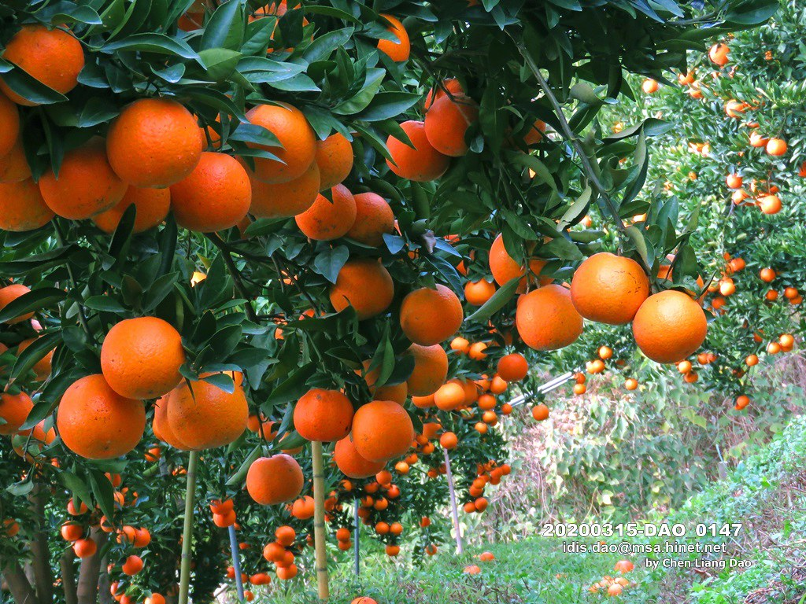
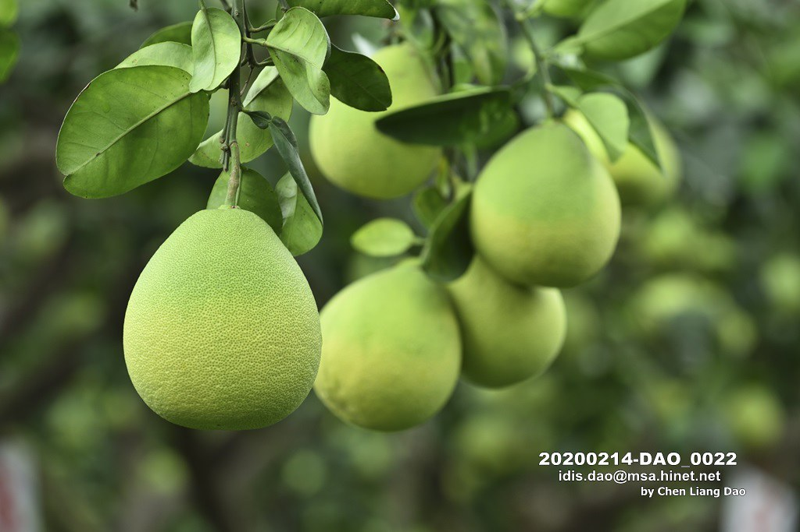
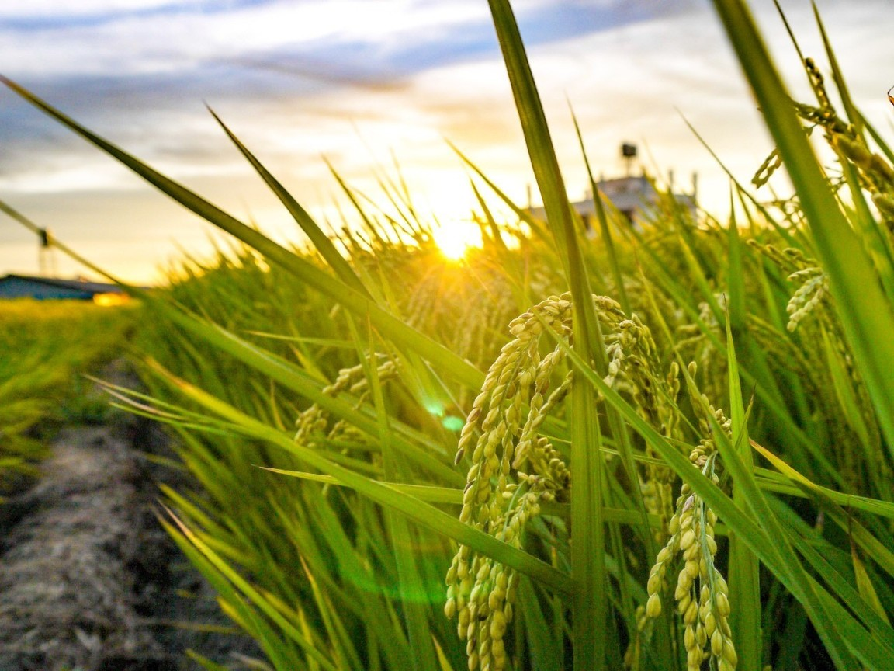
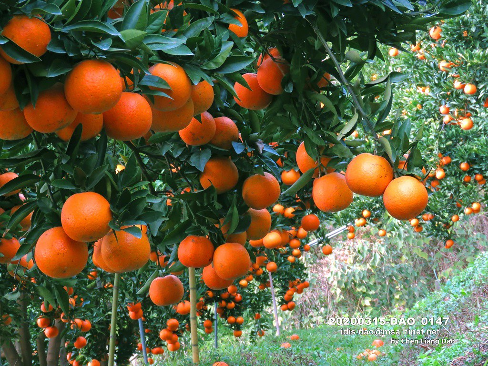
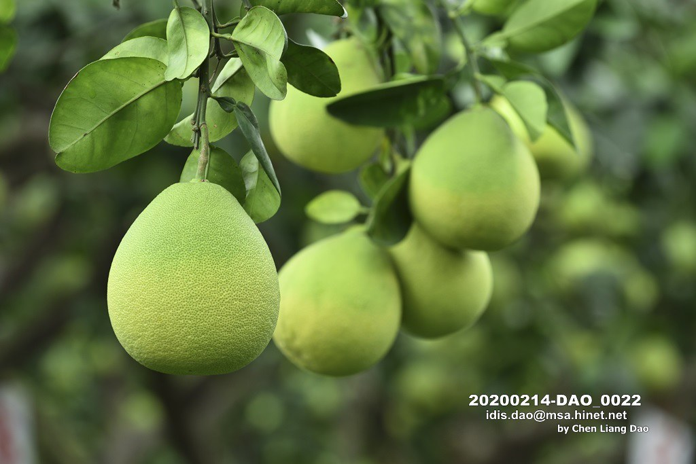
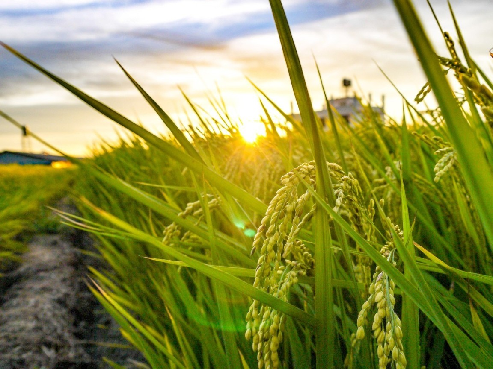
在現行的大部分農業中，農民因為售價低，所以希望最大化產量，而大量施用肥料與農藥；但有能力負擔的消費者希望吃得健康和安心，可是又不知道、不知道吃那些是好、值得信任的，所以不願意付更高的價格來購買產品。
在這個機制中，農家會需要改變種植與銷售習慣，從追求產量、賣給盤商再到到品質為重、直接由消費者購買，並且農家要記錄栽種過程、營養成分與價值，與消費者分享，讓消費者與農家間產生信任感。藉由互動，消費者能瞭解農民的辛苦與心血，也能知道農產品來源的品質；對農民來說，可以瞭解消費者需求及想法，以產品直送的方式，為農人增加獲利機會。
透過雙方互動，增加消費溫度，建立情感連結和知識的流動，讓消費者與農家能信任彼此，滿足雙方的需求。

 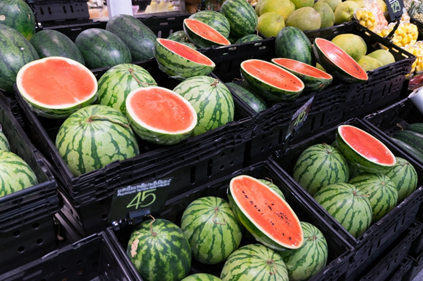
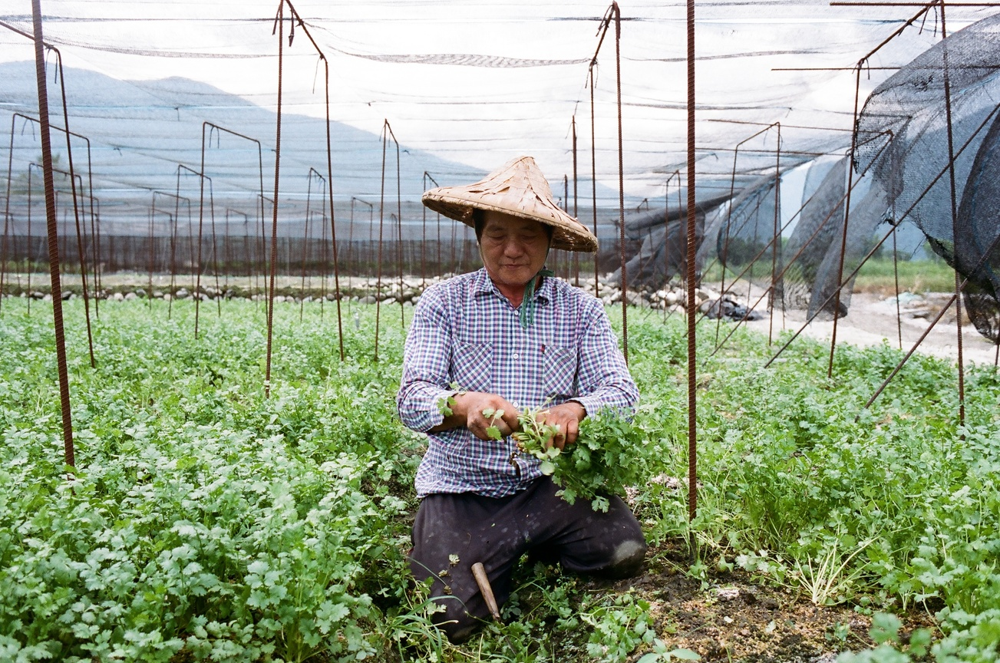
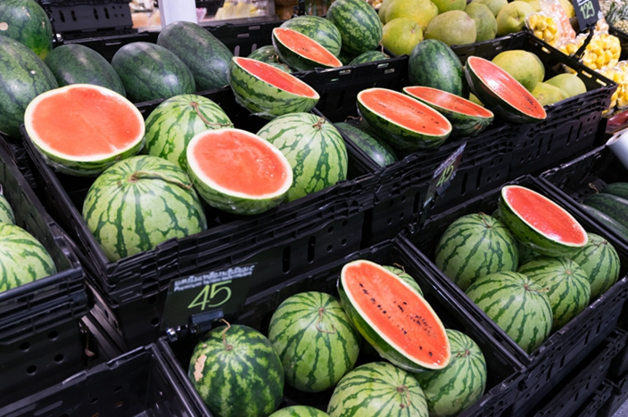
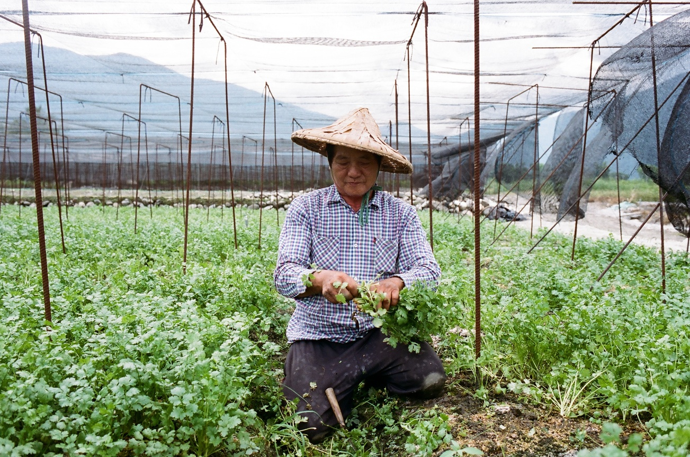
與Agri- Culture合作的農家，其使用的農法、肥料、農產品都經過Agri- Culture的認證與通過國家殘留物檢測，也都使用有機農法，Agri- Culture與合作的農家認為食品應該是要健康、安全、無毒的，我們追求質量大於產量，我們願意使用更自然的方式，不耗盡地力、不毒害土地、與養育我們的土地共存共榮，並存有一份感激之心。除了現行農法外，Agri- Culture與農家也積極與農試所合作，尋找更為適合土地、適合農家的生產方式。
除了生產作物外，Agri- Culture有在合作農家的土地舉辦活動，如：播種、收成、烹飪等食農教育活動，我們想要藉此讓更多人了解目前台灣農地和農業的現況與困境，吸引更多人來成為友善環境的推力。
不論您是消費者或農家，只要您認同我們的理念，歡迎您加入我們！
| 地區 | 生產者 | 種植品項 | 種植面積 |
| 嘉義縣水上鄉 | 黃水豐 | 胡蘿蔔、高麗菜。 | 5公頃 |
| 嘉義縣水上鄉 | 黃水豐 | 胡蘿蔔、高麗菜。 | 5公頃 |
| 嘉義縣水上鄉 | 黃水豐 | 胡蘿蔔、高麗菜。 | 5公頃 |
| 嘉義縣水上鄉 | 黃水豐 | 胡蘿蔔、高麗菜。 | 5公頃 |
| 嘉義縣水上鄉 | 黃水豐 | 胡蘿蔔、高麗菜。 | 5公頃 |
| 嘉義縣水上鄉 | 黃水豐 | 胡蘿蔔、高麗菜。 | 5公頃 |


Agri-Culture的目的是推廣台灣的農業及土地教育，並以已知的科學知識進行食品安全的危機管理，在對土地更友善的同時，讓消費者對食品能更安心、信賴，讓農家能有更好的獲利，促進農業的復甦。
除了對土地與生產的關注，我們也對農家的現況與外來感到憂心，目前農村人口外移嚴重，經常由高齡者進行繁重的農產活動，因此我們希望這些食農教育與活動，能夠吸引更多人的加入，也希望藉此建構農村聚落居民生活照護支援體系、發展農業產業文化。
整體來說Agri-Culture關注食安、食農、土地與最接近土地的人們，以資訊和情感串起整個網絡，並期望能夠繼續保持，讓農家、消費者、土地的三方都能獲利。

 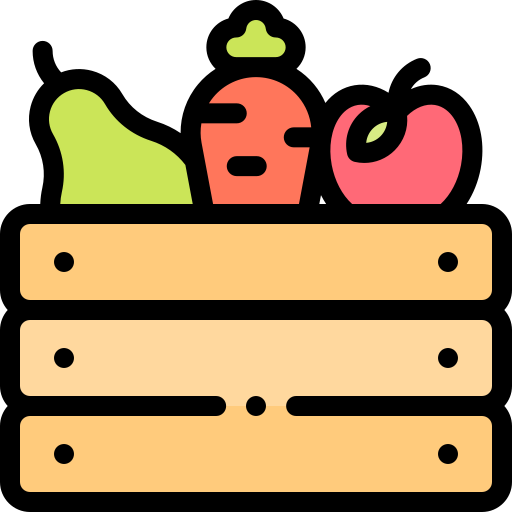
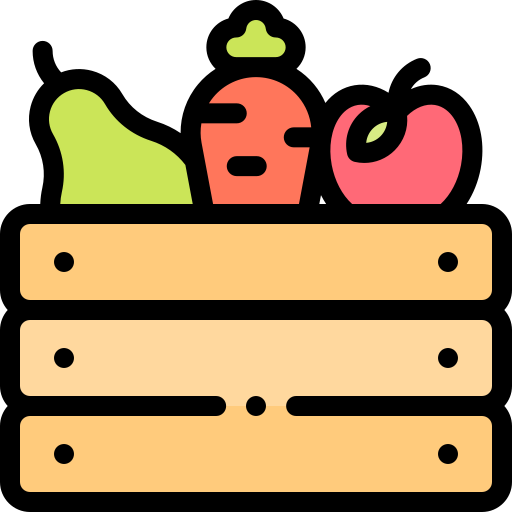
電話：06-662-3703
信箱：06-662-3703@gamil.com
地址：臺南市後壁區菁寮里73號
Terms & Conditions | Privacy
可提高消費者對自身產品的信任，創造產品品牌形象，提昇產品附加價值，也有助於組織內的管理效益。只要產銷履歷農產品的品質與安全能夠獲得消費者肯定，消費者願意以較高的合理價格購買，生產者就能夠得到實質獲利。
「產銷履歷」又稱為「食品可追蹤系統」(food traceability) 是自二十世紀末開始，世界各國均積極推動的一種食品作業制度，是國際間目前正在進行中、持續推動中的一個趨勢，也可說是一股新潮流，一個影響您我未來生活的新做法。食品追溯體系的運作目標，是希望維繫國際食品貿易的秩序與安全，針對每一批食品賦予特定的「批號」，讓整個食品流通過程的上游或是下游，都可以分別追溯或是追蹤該食品的來源或是去處，方便食品事件發生時，釐清責任以及保障消費安全，使原料生產者及食品業者要對自己的產品負責，提昇食品的品質與安全。
我國「農產品生產及驗證管理法」對「產銷履歷」(traceability)的定義為: 指農產品自生產、加工、分裝、流通至販賣之公開且可追溯之完整紀錄 (the ability to trace the information of an agricultural product through specified stages of cultivation, processing, packaging and distribution, which can be demonstrated by keeping complete records that could be made known to the pubic.)。另外﹐在台灣﹐生產產銷履歷的農產品要經過驗證的程序，以強化整個產銷履歷體系。
「產銷履歷」的定義﹐在各國都可能有些許差異﹐但是基本理念就是: (1) 涵括從生產到流通的整個食品鏈過程, (2) 可以追蹤追溯 (3) 提供批次產品之產銷公開資訊﹐這些在世界各國都是大致相同的。
產銷履歷農產品」的範圍多廣？所有的農產品，都可以做產銷履歷驗證嗎？
根據「農產品生產及驗證管理法」以及「產銷履歷農產品驗證管理辦法」，產銷履歷農產品，一定要經過驗證，而驗證的標準是根據「台灣良好農業規範」 , 因此要通過驗證，必須要先有「台灣良好農業規範」。
目前認證機構「全國認證基金會」 (TAF) ，對各驗證機構所發給的產銷履歷認證證書項目，分為一般農糧作物、有機農糧作物、農糧作物加工、養殖漁產品、漁產品加工、禽產品、畜產品、禽畜產品加工等，三大類八項目。
農糧產品的「台灣良好農業規範」是由各改良場提出草稿，經由農糧署報請農委會的產銷履歷輔導委員會通過之後，才正式公告。尚未公告「台灣良好農業規範」之項目，農友可自行規劃「台灣良好農業規範」草稿，向相關單位提出建議。